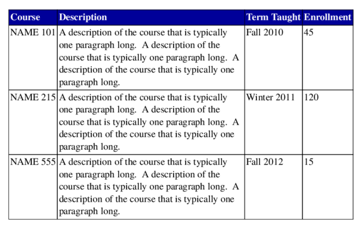

Separation of content and presentation in tables
Posted on November 18, 2012
Separation of content and presentation is one of the selling points of TeX over word-processors. Strictly speaking, TeX is not superior compared to word-processors in this regard. It is possible to obtain a clean separation between content and presentation in word-processors (using styles) and it is possible to mix content and presentation in TeX code, as is illustrated by the following example from sample tex file for the IEEE Conference on Decision and Control:
\title{\LARGE \bf
Preparation of Papers for IEEE CSS Sponsored Conferences \& Symposia
}
(Seriously, how can anyone recommend writing TeX code like that!)
In spite of the falseness of the argument, the general sentiment is true. It is much easier to write structured code (that separates content and presentation) in TeX than in word-processors. A testament to this is the ease with which one can convert a LaTeX document written in the style of one publisher house to that in the style of another publisher by simply changing the class file.
However, when it comes to tabular data, TeX, or rather LaTeX, is a mess. Simply browse through the questions tagged tables on TeX.SE if you don’t believe me. In this blog post, I want to argue that a clean separation between content and presentation is possible in TeX. The mess that is LaTeX tables is a limitation of LaTeX, and not of TeX. To illustrate this point, I’ll use ConTeXt and LuaTeX.
Lets start with a simple example.
which was typeset using the following code:
\bTABLE
\bTR
\bTD Course \eTD
\bTD Description \eTD
\bTD Term Taught \eTD
\bTD Enrollment \eTD
\eTR
\bTR
\bTD NAME 101 \eTD
\bTD A description of the course that is typically one paragraph long.
A description of the course that is typically one paragraph long.
A description of the course that is typically one paragraph long. \eTD
\bTD Fall 2010 \eTD
\bTD 45 \eTD
\eTR
\bTR
\bTD NAME 215 \eTD
\bTD A description of the course that is typically one paragraph long.
A description of the course that is typically one paragraph long.
A description of the course that is typically one paragraph long. \eTD
\bTD Winter 2011 \eTD
\bTD 120 \eTD
\eTR
\bTR
\bTD NAME 555 \eTD
\bTD A description of the course that is typically one paragraph long.
A description of the course that is typically one paragraph long.
A description of the course that is typically one paragraph long. \eTD
\bTD Fall 2012 \eTD
\bTD 15 \eTD
\eTR
\eTABLE
The ConTeXt interface is relatively clean. Rows are indicated by \bTR...\eTR and columns by \bTD...\eTD. The names of the command and the user interface is inspired from HTML tables.
So far, there is a clear separation between content and presentation, simply because we haven’t tweaked the presentation at all. Now suppose, I want to typeset the header as white on blue.
The clean way to add this achieve this is to define a new setup
\startsetups table:header
\setupTABLE[row][first][background=color, backgroundcolor=darkblue, color=white, style=bold]
\stopsetups
and simply change the first line of the table to
\bTABLE[setups={table:header}]
Note that the presentation element (how to style the first row) is defined in the document preamble, and the setup can be shared in all the tables that need that particular style. Now, suppose that in addition to the header, we want to remove the vertical lines in the middle of the table.
Again, to achieve this, define a new setups as follows:
\startsetups table:frame
\setupTABLE[frame=off]
\setupTABLE[topframe=on,bottomframe=on]
\setupTABLE[column][first][leftframe=on]
\setupTABLE[column][last][rightframe=on]
\stopsetups
and add the setups table:frame to the first line of the table
\bTABLE[setups={table:header, table:frame}]
Continuing this way, suppose we want to change the alignment of cells, say vertically middle align the first column, horizontally middle align the third column, add hyphenation to the second column; and add some offset between the cells.
(I am not arguing that this is a good visual style; just using this as an example without making the use case too complicated). As before, we define a new setups
\startsetups table:style
\setupTABLE[column][1][align={middle,lohi}]
\setupTABLE[column][2][align={normal,hyphenated,verytolerant}]
\setupTABLE[column][3][align=middle]
\setupTABLE[loffset=1mm,roffset=1mm]
\stopsetups
and add the setups table:style to the first line of the table.
\bTABLE[setups={table:header, table:frame, table:style}]
See, separation of presentation and content need not be difficult in TeX.
Let’s see if this approach is flexible to change. Suppose, I don’t like the
vertical middle alignment of the first column. I can simply change the
\setupTABLE[column][2][align=...] to my liking, and the change will be
applied to all tables using the table:style setups. (Contrast this with
what you need to do in LaTeX to achieve the same, and you’ll understand why
LaTeX tables are considered hard.)
The above examples illustrate a simple example. In a future blog post, I’ll show how one can use Lua to simplify typesetting of complicated tables, while still maintaining a separation of content and presentation.
This entry was posted in Formatting and tagged tables, separating content and presentation.